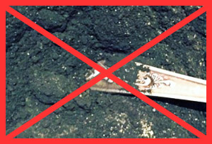
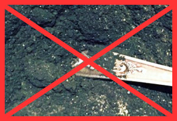

Sebastian, 34 años
Una vez discutí con mi esposa por un capricho de ella y perdí. Mi esposa me hablo maravillas sobre un ingenioso producto: Ella me dijo ve y depilate la cara. Me dio un Epilage, y se puso de pie burlandose. Pensé: debo cumplir su capricho ?. Bueno decidí complacer a mi esposa con Epilage, pero la verdad que fui yo el que termino complacido con el resultado, realmente el producto es muy bueno y lo mejor de todo es que no sentí dolor ni irritación. No pensé que la experiencia fuera tan satisfactoria.

José, 27 años
Nunca hubiera pensado que en lugar de una afeitadora utilizaría una cera para depilar. Bueno ¿Qué paso? El efecto es mejor y mas barato: ahora me depilo cada dos semanas, mientras que antes tenía que usar una máquina 2 veces al dia. Incluso noto que los pelos de la cara salen cada vez mas finos y son más faciles de retirar. En general Epilage es una cosa Genial.

Camilo, 31 años
Epilage es un material eirrealmente genial. ¿Y quién dijo que sólo las mujeres pueden utilizar cera para depilación? Creo que los hombres me entenderan perfectamente bien, quienes, después de afeitarse por las mañana, vuelven hacerlo por las noches! Con Epilage puedes olvidarte de afeitarte por semanas y su procedimiento es muy fácil y sin dolor!


 
